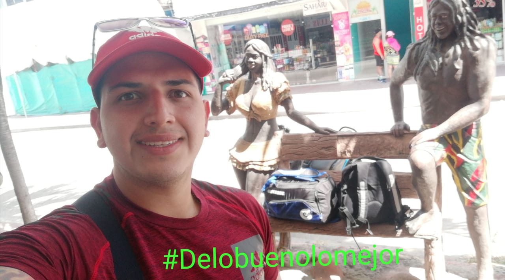

Elkin Alexander Garcia Jerez
27 De Octubre De 1993 Bucaramanga Santander
INICIO | EDUCACION | EXPERIENCIAInformacion Personal

Soy un joven emprendedor que a mi corta edad fuy un amante a trabajar para obtener mis cosas,
gracias a las experiencias vividas en ese entonces, fuy formando mi mente para ser un ganador
en el mundo del comercio, donde conoci personas de las cuales aprendi muchas habilidades para ser
competitivo en el mundo de los negocios, y gracias a ello en este momento tengo un negocio de
AUTOSERVICIO SUPERMERCADO del cual doy propietario, soy una persona que constantemente
estoy expuesto a aprender de las demas personas.
Idiomas
Español